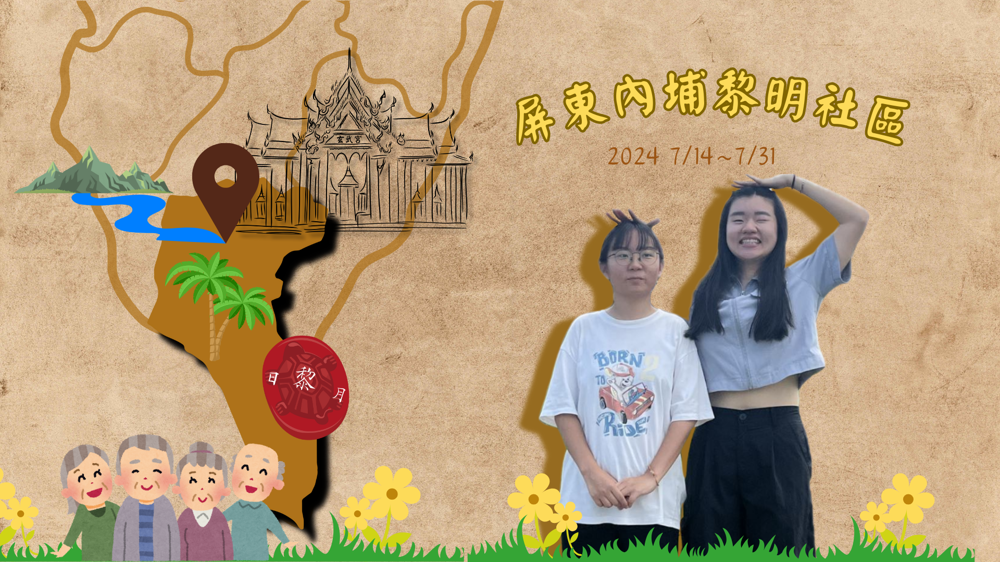

黃妍蓁
關於我
最高學歷
國立台灣科技大學 企業管理系
聯絡方式
Email：b11108031@gapps.ntust.edu.tw
幹部經歷
2025/01/01～至今
台科大第三宿舍-副舍長
- 管理樓層幹部
- 辦理宿舍活動
- 與校方直接溝通
2024/01/01～2024/12/31
台科大第三宿舍-七樓樓長
- 協助管理宿舍各項事務
- 傳達學校交辦事項及住宿生反饋
2023/09/17
企管系迎新活動-關主
- 制定遊戲內容及規範
- 主持遊戲進行並確保流程順暢
2023/02/03～2023/02/05
中部校友會-返鄉服務 活動組-歡迎會負責人
- 制定活動流程、設計內容、分配工作
- 完成企劃書並確保流程順利進行
2019～2022
班級幹部-風紀股長、實習股長、輔導股長、各科小老師
社團幹部-文書組長
- 協助管理班級秩序
- 完成各處室及老師交辦事項
- 紀錄課程進度
工作經歷
2024/03/27～至今
摩斯漢堡內、外場、晚值
- 顧客溝通窗口、協助收銀、維護外場清潔
- 餐點製作、食材前置準備、維護內場整潔
- 清帳作業、業績紀錄、關店收尾
2023/08/26～2023/08/29
大買家特殊檔期銷售人員
- 販售品牌商品並完成業績目標
2023/07/30～2023/08/08
飛利浦特別檔期銷售人員
- 販售飛利浦品牌商品、達成業績目標
作品集

檢定證照
技術士證-門市服務 丙級
技術士證-會計事務(人工記帳) 丙級
技術士證-會計事務(資訊) 丙級
商教會-會計能力測驗 一級
商教會-會計能力測驗 二級
商教會-會計能力測驗 三級
商教會-商業管理能力檢定 二級
TQC 電腦會計 IFRS 專業級
TQC PowerPoint 2016 實用級